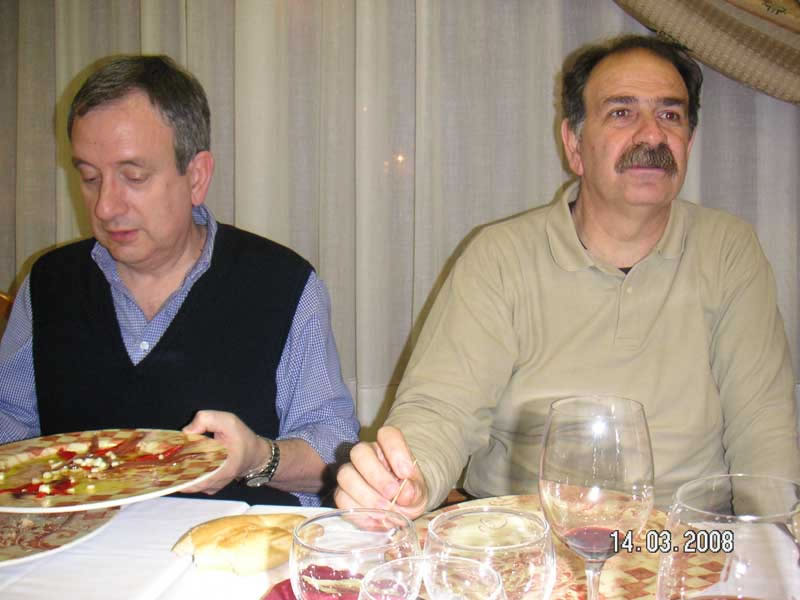

Encuentro en SantoñaAnterior | Inicio | Siguiente |
|
 Si en la fotografía anterior eran Carlos y fernando los que no disimulaban su disgusto.... aquí tenemos a los dos Carlos altamente mosqueados, uno, porque sólo tiene un palillo que echarse a la boca y el otro, porque solo le han dejado ajos y dos anchoas.... ¡¡¡ amos que...!!! |